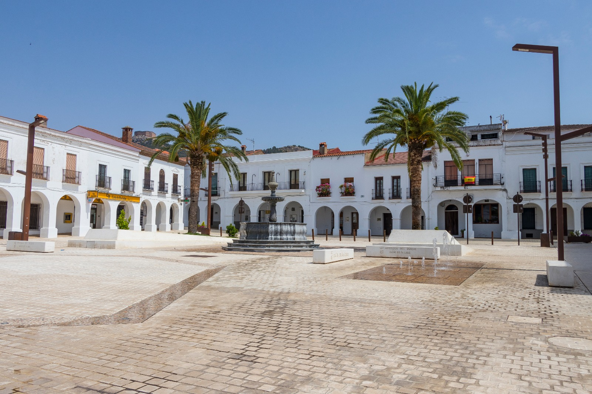
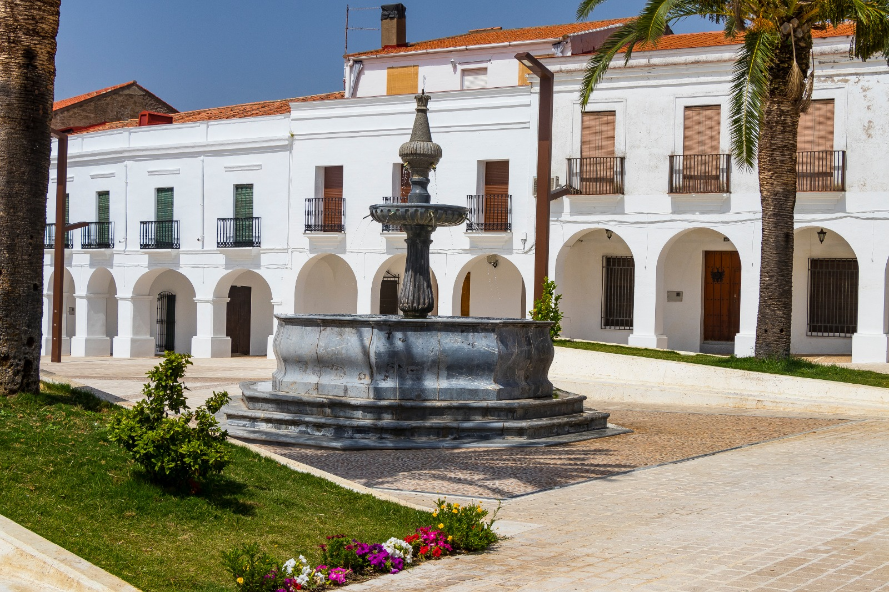
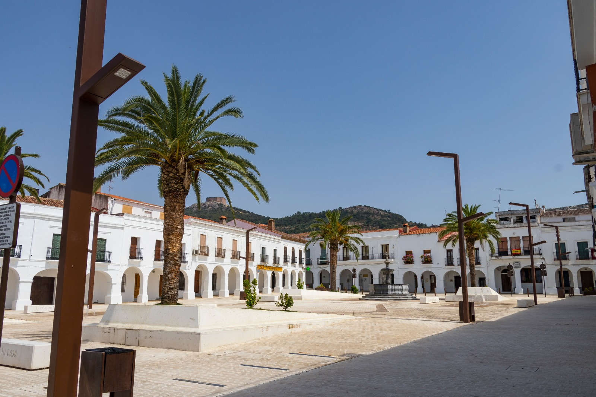
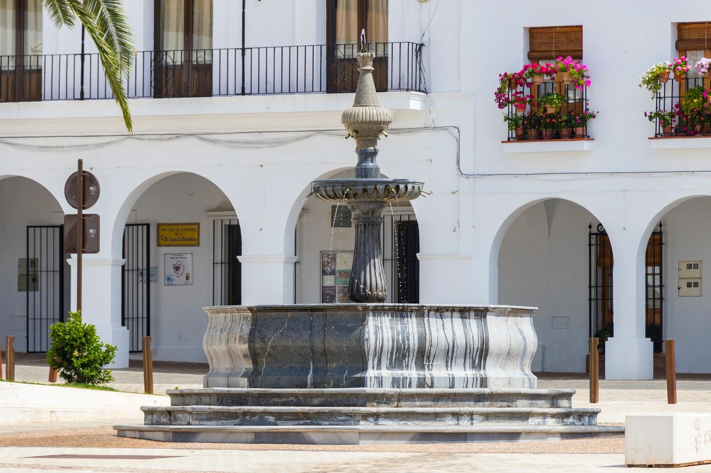
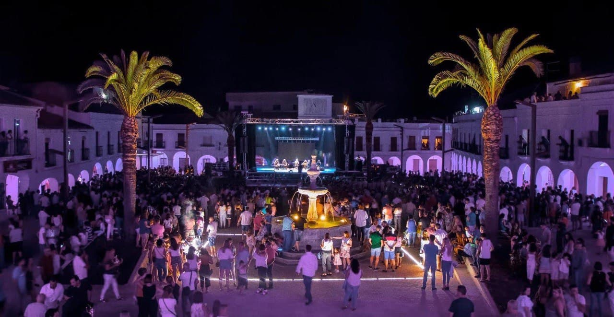
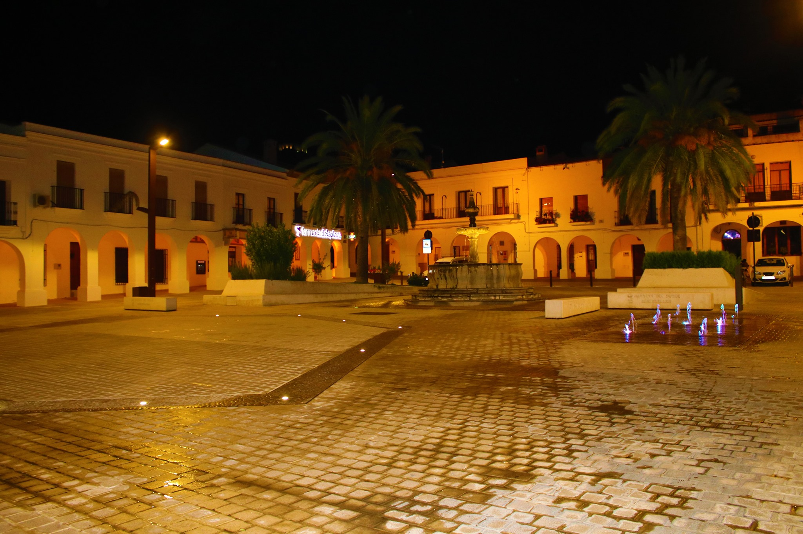

Plaza de España
El corazón latiente de Herrera, famosa por su fuente y sus soportales.
El corazón histórico y social del municipio
La Plaza de España de Herrera del Duque es uno de los espacios más emblemáticos de la localidad y el auténtico corazón de la vida urbana. Situada en pleno centro histórico, esta plaza ha sido durante siglos el principal punto de encuentro, celebración y actividad comercial del municipio.
Más que un espacio urbano, la plaza representa la memoria colectiva de Herrera del Duque: un lugar donde historia, architecture y tradición se entrelazan con la vida cotidiana.
Un espacio con historia
La plaza ha sido, desde sus orígenes, el eje principal sobre el que se ha articulado el crecimiento del casco urbano. Tradicionalmente concebida como plaza mayor, fue durante siglos el lugar donde se desarrollaban los mercados, los actos institucionales y las celebraciones populares.
En sus orígenes presentaba una planta cuadrada, aunque con el paso del tiempo y las sucesivas transformaciones urbanísticas fue adoptando su actual forma rectangular.
Durante la segunda mitad del siglo XX experimentó diversas reformas que modificaron parte de su fisonomía original, aunque todavía conserva su carácter histórico y su importancia como centro neurálgico del municipio.
Arquitectura y estructura
Uno de los elementos más característicos de la Plaza de España es su arquitectura tradicional.
Gran parte del perímetro está formado por soportales y arcadas, que generan espacios cubiertos y protegidos, muy representativos del urbanismo popular extremeño.
La plaza dispone de cinco accesos principales, que conectan con las calles históricas del municipio y facilitan la circulación peatonal.
Entre sus elementos arquitectónicos destaca también el arco abovedado que conecta con la calle Cantarranas, sobre el que antiguamente se encontraba la Casa de la Audiencia o del Consejo, símbolo del antiguo poder local.
Actualmente, en este punto se sitúa el reloj de la localidad, uno de los referentes visuales más reconocibles del centro urbano.
La fuente monumental de 1787
En el centro de la plaza se alza uno de sus elementos patrimoniales más destacados: la fuente monumental de 1787.
Construida en jaspe negro pulimentado, esta fuente presenta una elegante estructura octogonal sobre una base escalonada, coronada por una columna central de aproximadamente cuatro metros de altura.
Durante siglos desempeñó una función esencial como punto de abastecimiento de agua para los vecinos. Las familias acudían a recoger agua con cántaros, convirtiéndola en un elemento clave de la vida cotidiana.
Hoy conserva una función ornamental y constituye uno de los principales símbolos históricos de la plaza.
Un espacio para la vida social y cultural
La Plaza de España ha sido siempre un espacio vivo.
A lo largo de su historia ha acogido:
- mercados y comercio local
- celebraciones populares
- actos festivos y religiosos
- encuentros vecinales
- eventos gastronómicos y culturales
En la actualidad continúa siendo el principal escenario de numerosas actividades municipales, ferias and encuentros, manteniendo su papel como centro social del municipio.
Curiosidad histórica: antigua plaza de toros
Uno de los datos más curiosos de este espacio es que, antes de la construcción de la plaza de toros en 1947, la Plaza de España se utilizaba como coso taurino provisional.
Para ello se cerraban sus accesos con carros y estructuras temporales, transformando la plaza en un recinto para la celebración de festejos taurinos durante las primeras décadas del siglo XX.
Este hecho pone de manifiesto la versatilidad y centralidad histórica del espacio.
Un símbolo de identidad
La Plaza de España no es solo el centro físico del municipio, sino también uno de sus principales símbolos.
Su historia, su arquitectura tradicional y su papel en la vida social hacen de este lugar una visita imprescindible para quienes desean conocer la esencia de Herrera del Duque.
Un espacio donde cada rincón conserva la huella del tiempo y donde todavía hoy continúa latiendo la vida del pueblo.
Siente el latido del corazón de Herrera del Duque
Visitar la Plaza de España es descubrir el alma del municipio.
Aquí convergen historia, patrimonio y tradición, en un entorno que sigue siendo punto de encuentro para vecinos y visitantes.
Un lugar perfecto para pasear, contemplar la fuente monumental y sentir el pulso cotidiano de Herrera del Duque.
Galería de fotos





